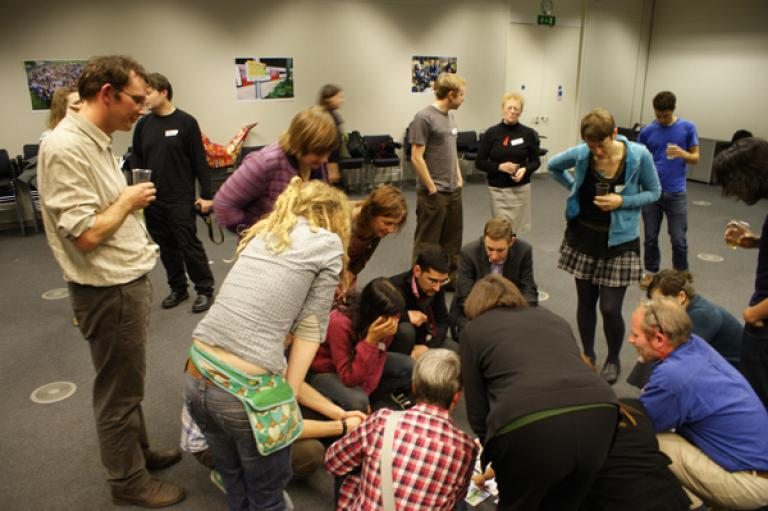
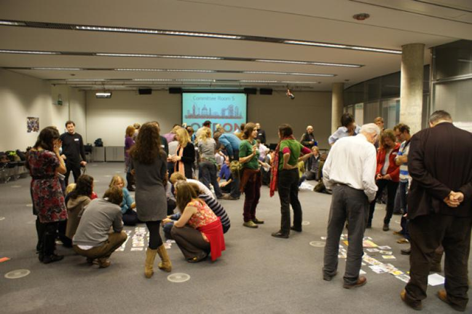
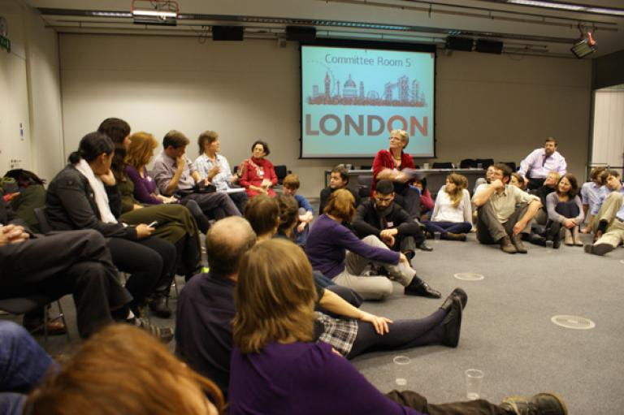
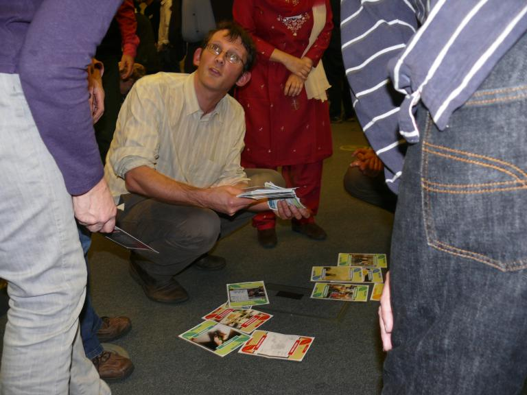
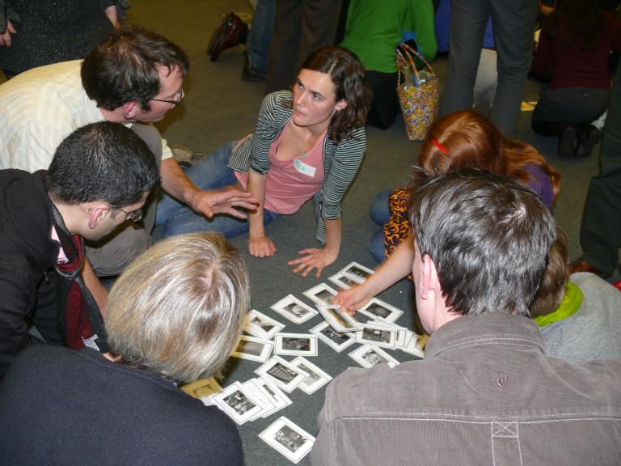
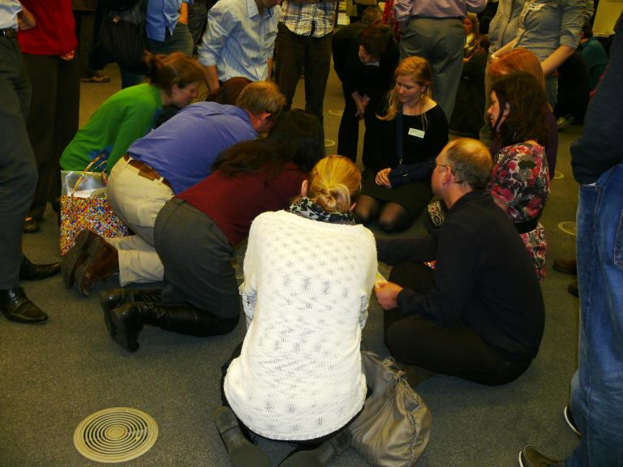
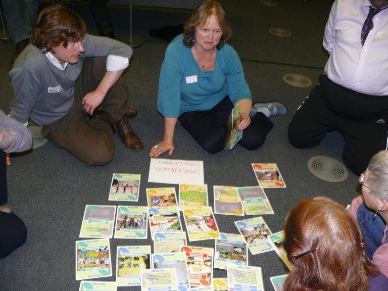
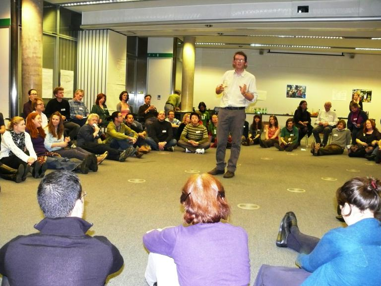
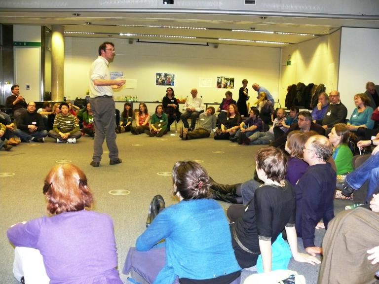

London Transition Groups Gathering - Thursday 1st December 2011









![[photo]](photos/011211/DSC03457.JPG)
![[photo]](photos/011211/London Transitions-01.jpg)
![[photo]](photos/011211/London Transitions-02.jpg)
![[photo]](photos/011211/London Transitions-03.jpg)
![[photo]](photos/011211/London Transitions-04.jpg)
![[photo]](photos/011211/London Transitions-05.jpg)
![[photo]](photos/011211/London Transitions-06.jpg)
![[photo]](photos/011211/London Transitions-08.jpg)
![[photo]](photos/011211/London Transitions-09.jpg)
![[photo]](photos/011211/London Transitions-11.jpg)
![[photo]](photos/011211/London Transitions-12.jpg)
![[photo]](photos/011211/London Transitions-13.jpg)
![[photo]](photos/011211/London Transitions-14.jpg)
![[photo]](photos/011211/London Transitions-15.jpg)
![[photo]](photos/011211/London Transitions-16.jpg)
![[photo]](photos/011211/London Transitions-17.jpg)
![[photo]](photos/011211/London Transitions-19.jpg)
![[photo]](photos/011211/London Transitions-20.jpg)
![[photo]](photos/011211/London Transitions-21.jpg)
![[photo]](photos/011211/London Transitions-22.jpg)